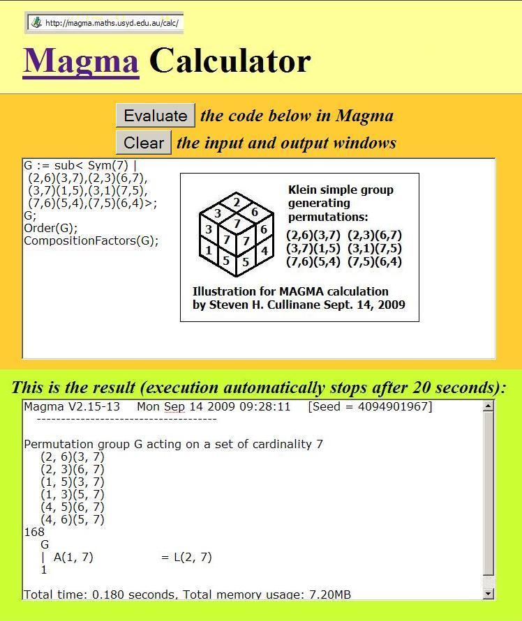
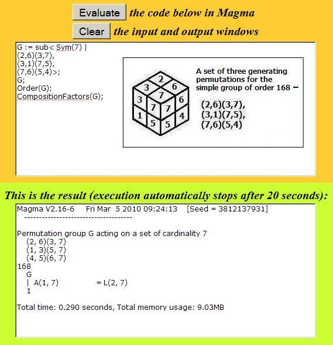

The image below is an illustration for
"
A Reflection
Group
of Order 168"
and "
The Eightfold
Cube."
The calculation indicates that Klein's
simple group of order 168 is generated
by permuting parallel 1x1x2 "bricks" in
each of three halves of a 2x2x2 cube.
Each such permutation is a
reflection:
a linear transformation of a vector space
that fixes a hyperplane pointwise.

Here "A(1, 7)" is a MAGMA designation
for the group L
2(7) (
Atlas notation),
which is isomorphic to the group L
3(2).
The group action illustrated by the permutations
in the calculation is of course that of L
3(2).
Note of March 4, 2010:
The group L
3(2) can be generated by using
only three of the six permutations above--
